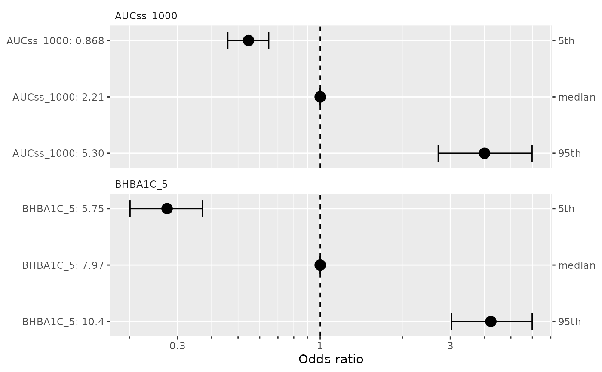
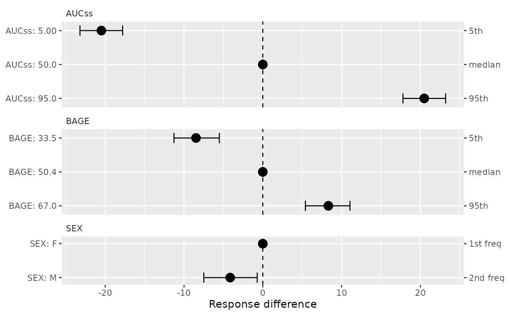

Visualize the covariate effects for ER model
plot_coveff.RdVisualize the covariate effects for ER model
Usage
plot_coveff(x, ...)
# S3 method for class 'ermod'
plot_coveff(
x,
data = NULL,
spec_coveff = NULL,
qi_width = 0.9,
qi_width_cov = 0.9,
...
)
# S3 method for class 'coveffsim'
plot_coveff(x, ...)Arguments
- x
an object of class
ermod,coveffsim, or their subclasses- ...
currently not used
- data
an optional data frame to derive the covariate values for forest plots. If NULL (default), the data used to fit the model is used.
- spec_coveff
you can supply spec_coveff to
sim_coveff()orplot_coveff(), if you have already built it manually or withbuild_spec_coveff(). Seebuild_spec_coveff()for detail.- qi_width
the width of the credible interval on the covariate effect. This translate to the width of the error bars in the forest plot.
- qi_width_cov
the width of the quantile interval for continuous covariates in the forest plot. Default is 0.9 (i.e. visualize effect of covariate effect at their 5th and 95th percentile values).
Value
A ggplot object. For binary models (ermod_bin), plots odds ratios
on a log scale with reference line at 1. For linear models (ermod_lin),
plots response differences on a linear scale with reference line at 0.
Examples
# \donttest{
data(d_sim_binom_cov_hgly2)
ermod_bin <- dev_ermod_bin(
data = d_sim_binom_cov_hgly2,
var_resp = "AEFLAG",
var_exposure = "AUCss_1000",
var_cov = "BHBA1C_5",
)
plot_coveff(ermod_bin)

# Linear regression model example
data(d_sim_lin)
ermod_lin <- dev_ermod_lin(
data = d_sim_lin,
var_resp = "response",
var_exposure = "AUCss",
var_cov = c("SEX", "BAGE"),
)
plot_coveff(ermod_lin)

# }